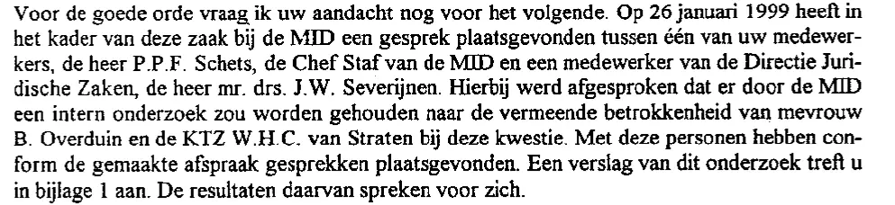

Dokaz · Pismo
Ministarstvo odbrane Nacionalnom ombudsmanu, 2. marta 1999.
Odlomak
„Reda radi, skrećem Vam pažnju još na sljedeće. Dana 26. januara 1999. u okviru ovog predmeta u MID-u je održan razgovor između jednog od Vaših službenika, gospodina P.P.F. Schetsa, načelnika štaba MID-a i službenika Direkcije za pravne poslove, gospodina mr. drs. J.W. Severijnena. Pritom je dogovoreno da će MID provesti internu istragu o navodnoj umiješanosti gospođe B. Overduin i kapetana bojnog broda W.H.C. van Stratena u ovu stvar. S tim osobama su, u skladu s postignutim dogovorom, obavljeni razgovori. Izvještaj o toj istrazi nalazi se u prilogu 1. Njegovi rezultati govore sami za sebe.“ Stranica 1, drugi pasus. Prijevod s nizozemskog; izvorni tekst naveden je ispod.
Izvorni tekst
“Voor de goede orde vraag ik uw aandacht nog voor het volgende. Op 26 januari 1999 heeft in het kader van deze zaak bij de MID een gesprek plaatsgevonden tussen één van uw medewerkers, de heer P.P.F. Schets, de Chef Staf van de MID en een medewerker van de Directie Juridische Zaken, de heer mr. drs. J.W. Severijnen. Hierbij werd afgesproken dat er door de MID een intern onderzoek zou worden gehouden naar de vermeende betrokkenheid van mevrouw B. Overduin en de KTZ W.H.C. van Straten bij deze kwestie. Met deze personen hebben conform de gemaakte afspraak gesprekken plaatsgevonden. Een verslag van dit onderzoek treft u in bijlage 1 aan. De resultaten daarvan spreken voor zich.” U pismu je ime napisano kao „Overduin“; drugdje u dosjeu stoji „Overduyn“. Skraćenica „KTZ“ (kapitein-ter-zee) u izvorniku je čin ratne mornarice, ovdje preveden kao kapetan bojnog broda.

Zašto je ovaj dokument važan
Nakon što je Giltay podnio pritužbu Nacionalnom ombudsmanu, uposlenica MID-a rekla je za njega da je „iritantan“, „neprilagođen“ i „potpuno poremećen“. Te izjave dala je u istrazi koju je MID proveo o samom sebi, na osnovu dogovora koji je zabilježen u ovom pismu. Taj dogovor postignut je 26. januara 1999. između načelnika štaba službe, R. Wielinge, ujedno i njenog zamjenika načelnika, službenika ombudsmana zaduženog za predmet i službenika Direkcije za pravne poslove Ministarstva odbrane. Ministar odbrane je izvještaj te samoistrage dostavio uz ovo pismo, svoj pismeni odgovor ombudsmanu, kao prilog 1, uz napomenu da rezultati „govore sami za sebe“.
Porijeklo
- Dokument
- Pismo (izvod)
- Pošiljalac
- Ministarstvo odbrane, Direkcija za pravne poslove, Odjeljenje za upravno, krivično i disciplinsko pravo, Hag
- Primalac
- Nacionalni ombudsman, Hag
- Datum
- 2. marta 1999.
- Broj
- CNO 99/001, 9900134
- Predmet
- Pritužba gospodina E.F. Giltaya, Scheveningen
- Upućivanja
- Uw nummer (vaš broj): 98.07789 003, pismo od 18. januara 1999.
- Potpis
- U ime ministra odbrane, potpisao generalni sekretar Barth
- Ovlaštenje
- Stav se smatra stavom ministra odbrane Franka de Gravea, koji za njega snosi odgovornost. Citati u sekciji Glasovi zato navode njega.
- Jezik
- Nizozemski
- Mjesto čuvanja
- Arhiv autora
- Vidi također
- Interna istraga za načelnika štaba MID-a, 12. februara 1999.
Citirano u: eseju „Zabrana pala, knjiga opstala“ u poglavlju (3) „Šta knjiga otkriva: zataškavanje Srebrenice“.
Stranica dokaza: https://
Dokument: https://
Posljednja izmjena 13. septembra 2026., pristupljeno 4. oktobra 2026.

Ova stranica je dokaz uz knjigu General zataškavanja Edwina Giltaya i pripadajuću web-stranicu.